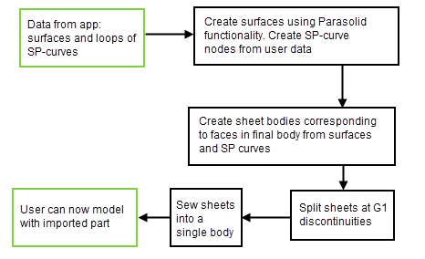
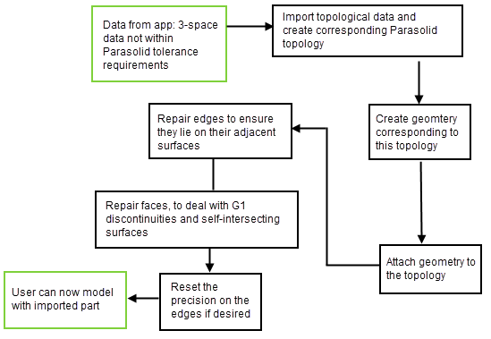

| |
Importing Foreign Data |
| <<< Blending | Chapters | Storing Data >>> |
Sharing digital model data as part of the collaborative process of design and manufacture is becoming an increasingly important requirement in product life-cycle management. Organisations require reliable associative interoperability, regular exchange of data, and the confidence to be able to re-use their design information in all possible situations.
In an ideal world, companies sharing data would all use the same system, but this is usually not the case. Different organisations standardize on different systems, specific parts of the product life-cycle require applications suited to their particular needs (for example, FEA), and the formats these applications use to store model data may not be compatible.
Mindful of the requirements and realities of the PLM world, Parasolid supports several ways of reading in parts that were created using applications not based on Parasolid. You can use this functionality either to read data directly into your application, or to develop dedicated translators for importing data into Parasolid-powered applications.
In order to support the widest possible range of application types, Parasolid provides two general methods for importing external model data:
|
the originating system does not work with topological data. To use this method, the data must be supplied in the form of trimmed surfaces (surfaces bounded by loops of surface parameter curves). See Section 11.2, “Trimmed surface import”. |
|
|
the originating system knows the B-rep topology of the model. See Section 11.3, “B-rep import” |
These methods are described in more detail in the rest of this chapter.
|
Note: You can also purchase dedicated two-way translator technology from Siemens Digital Industries Software. These solutions can be plugged into your application directly with no additional development beyond basic integration requirements. See Section 1.4, “The Parasolid product portfolio”, for more information. |
You should use the trimmed surface import method when the data you want to read into Parasolid was generated in a surface modeler that does not attempt to represent a solid model at all.
Figure 11-1 Trimmed surface import method
When your application creates sheet bodies, you can set a wide variety of options (such as tolerance) to reflect your understanding about the validity of the data being imported.
Even with data created using a true solid modelling application, there is a good chance that Parasolid may be unable to model reliably with the data as originally created in the other system, because different modelers have their own criteria about what represents a valid model.
Typically, data imported into Parasolid from another solid modeler will have a lower resolution than data created directly in Parasolid. Instead of a set of well defined touching faces, Parasolid perceives gaps and overlaps along every edge, and these must be dealt with before any downstream modelling operations can occur.
Parasolid uses Tolerant Modelling (see Section 3.6, “Accuracy of Parasolid models”) to modify the low resolution data by applying local tolerance information. This approach allows the intentions of the original designer to be preserved in the faces and surfaces of the model, while treating edges and vertices as entities derived from this data that inherit the resolution used by the original modeler. After applying tolerance information, downstream modelling operations may proceed without causing problems due to the nature of the imported data.
Figure 11-2 B-rep import method
If you need to import a geometry type present in the originating application that is not available in Parasolid, you can approximate it using a B-surface or B-curve.
| <<< Blending | Chapters | Storing Data >>> |